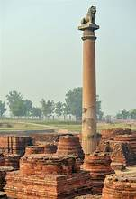

Welcome to Bihar
Explore the rich heritage, ancient culture, and historical landmarks of Bihar
üèôÔ∏è Major Cities & Tourist Attractions

Patna – The capital city known for its rich historical heritage, including Golghar and Patna Museum.
Bodh Gaya – A UNESCO World Heritage Site where Gautama Buddha attained enlightenment.
Nalanda – Ancient seat of learning and home to the historic Nalanda University ruins.
Rajgir – A scenic town known for its hot springs, Vishwa Shanti Stupa, and ancient ruins.


Vaishali – An ancient city where Lord Mahavira was born and the site of Ashoka Pillar.
Sitamarhi – Birthplace of Goddess Sita and a famous pilgrimage site for Hindus.


Champaran – Famous for Mahatma Gandhi's first Satyagraha movement and historical significance.
Kesaria – Home to the largest Buddhist stupa in the world, reflecting Buddhist heritage.
⛩️ Temples & Religious Sites
Mahabodhi Temple – A sacred site where Buddha attained enlightenment, located in Bodh Gaya.
Vishnupad Temple – An important Hindu temple dedicated to Lord Vishnu in Gaya.

Mundeshwari Temple – One of the oldest functional Hindu temples in India.
Jal Mandir – A serene Jain temple situated in Pawapuri where Lord Mahavira attained Nirvana.

Maa Patneshwari Temple – A revered Hindu temple located in the heart of Patna.
Buddha Stupa – A sacred stupa associated with Lord Buddha’s life and teachings.

Vikramshila University – An ancient center of learning for Buddhist philosophy and culture.
Patan Devi Temple – One of the 51 Shakti Peethas, dedicated to Goddess Durga in Patna.

üèõÔ∏è Historical Monuments & Heritage
Golghar – A granary built by the British in 1786 with panoramic views of Patna.
Ruins of Nalanda – An ancient learning center and UNESCO World Heritage Site.

Ashoka Pillar – A symbol of Emperor Ashoka’s reign and his promotion of Buddhism.
Barabar Caves – The oldest surviving rock-cut caves in India, associated with Jainism.
Agam Kuan – An ancient well associated with Emperor Ashoka’s reign.
Maner Sharif – A Sufi shrine dedicated to the famous Sufi saint Makhdoom Yahya Maneri.
üè§ Museums & Cultural Centers

Patna Museum – Showcases a vast collection of historical artifacts and sculptures.
Bihar Museum – A modern museum reflecting Bihar’s rich cultural history.
Gaya Museum – Displays ancient sculptures, coins, and manuscripts.
Kumhrar Park – Archaeological site showcasing the remains of ancient Pataliputra.